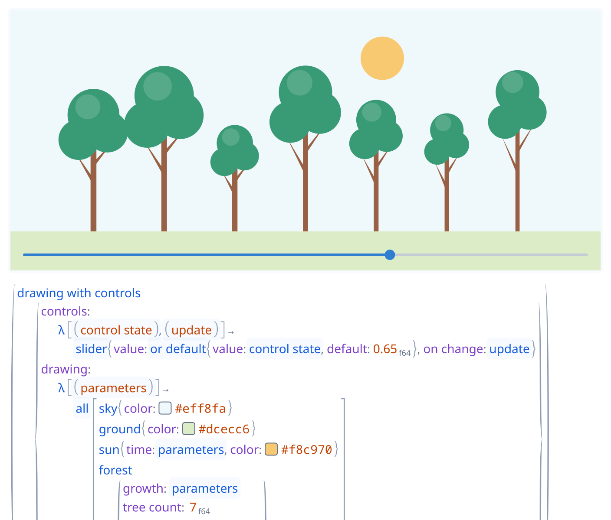
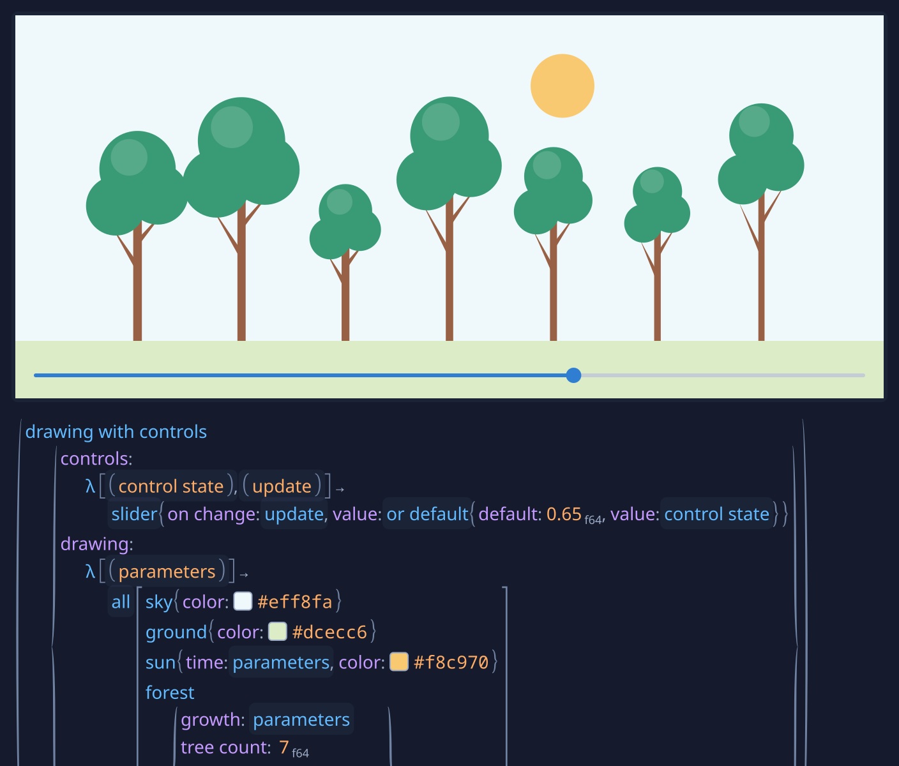
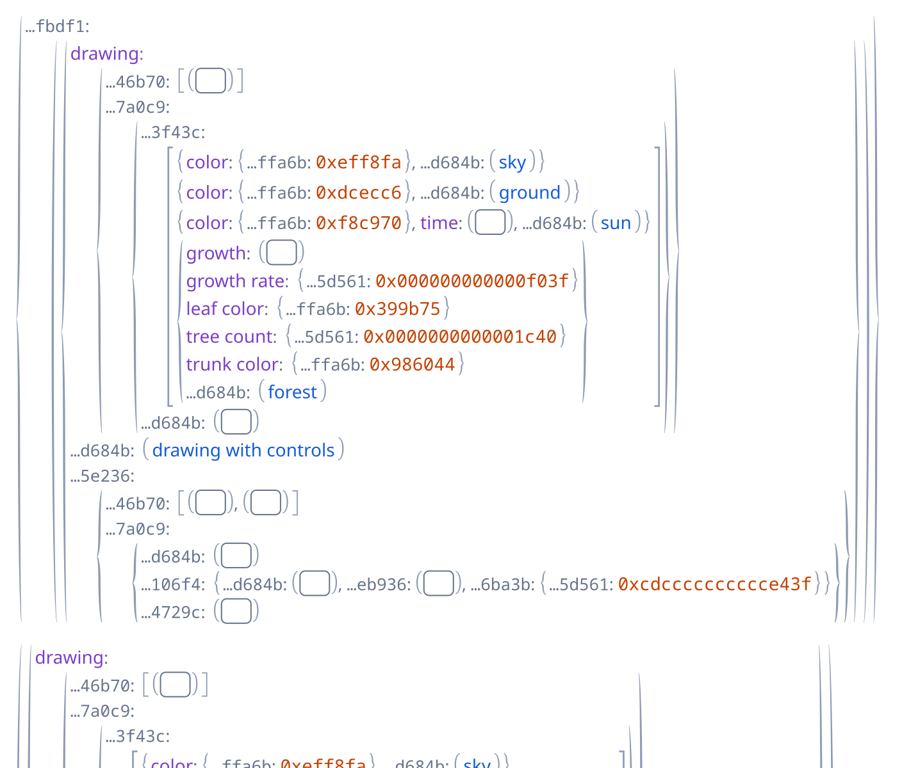
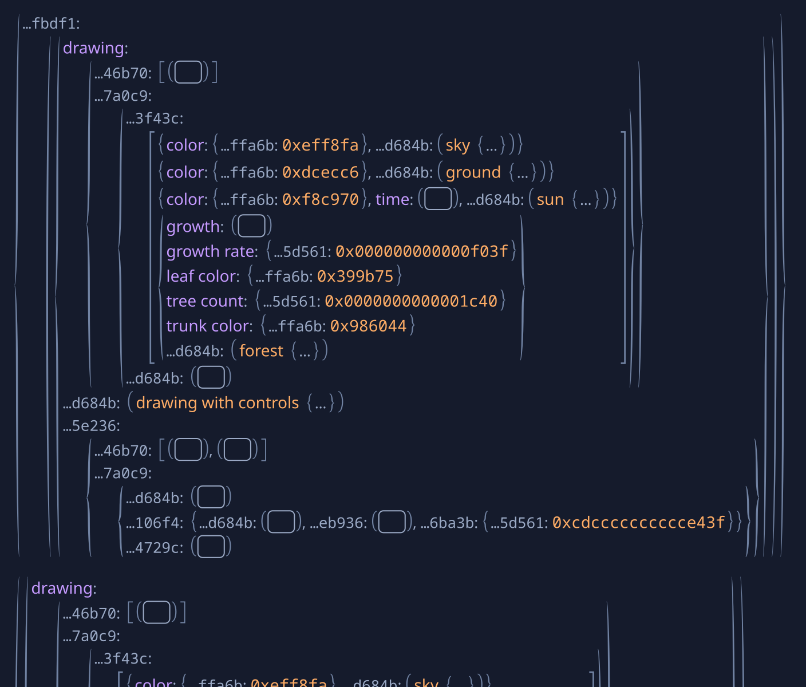
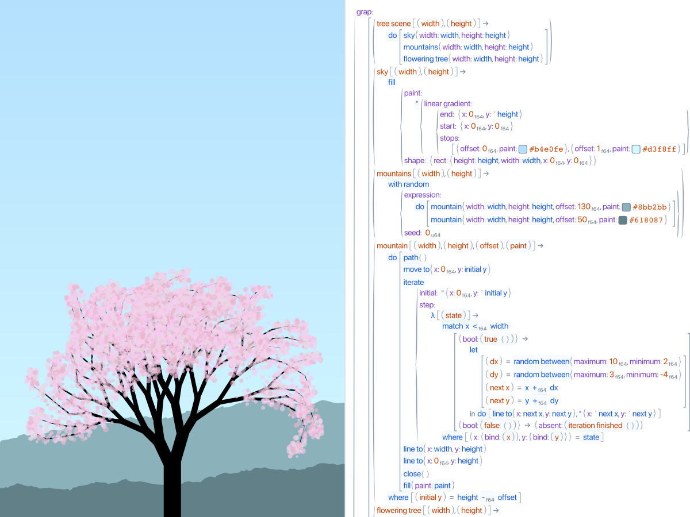
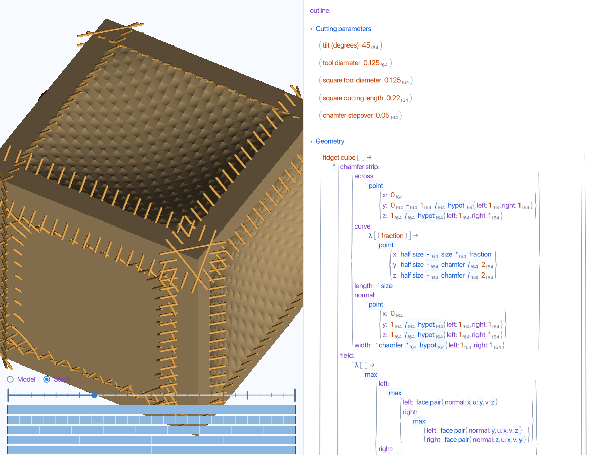

Excel meets JSON, but a graph, and it’s projected.
Progred is a pre-alpha programming environment. Your program is a document, and everything you see, including the code, is a projection of it drawn by some library. Working in it feels more like a spreadsheet than a text file: change a value, and whatever depends on it updates. Progred is a minimal prototype that demonstrates these ideas, not a finished product.
Like a JSON object, a record maps keys to values. But a key isn’t a string: it’s an identity with a name attached as a label, so renaming a key never breaks anything that uses it. A value can also live in a cell, which has its own identity, so any number of places can point to it; that’s what makes a document a graph. There are no built-in strings or numbers either, just records, lists, blobs of raw bytes, and cells. Whoever owns a key decides what it means and how it’s drawn: a 60f64 is an eight-byte blob under the f64 library’s key, and a function is a record that Grap, Progred’s language, knows how to run.
Progred is public early to get feedback. Share on Zulip what clicks, what doesn’t, and where you get lost.
This forest is a program. Drag its slider to grow it, or hold Ctrl and click a tree to find the code that drew it. Then switch off what the libraries draw, one layer at a time, and then the names, until you’re looking at what’s stored.


Drawn with the absent, color, control, f64, grap, layout, presentation, sequence, and controls libraries.


The same document with those libraries’ drawing switched off: calls, colors, and numbers as the records and blobs they’re stored as. On a laptop, this is a live editor you can take apart yourself.
The ideas
The data
Structure, not text
A Progred document is built from four things: records, lists, blobs, and cells. Records map keys to values and lists keep them in order; blobs, runs of raw bytes, are the leaves; a cell is a value with its own identity that any number of places can point to, which makes a document a graph rather than a tree. Nothing is parsed, and there’s no source text to keep in sync. The .gid files in the repository are a temporary text bridge for Git and tools.
Every key and every reference is a random 128-bit identity. A name is a fact stored about a cell, {name: "x"}, which projections draw as a label. So renaming never breaks a reference, two different things can wear the same name, and a call files its arguments under its parameters’ identities.
Text is a blob under the text library’s utf8 key, and a 64-bit float is an eight-byte blob under the f64 library’s key; the small f64 beside a number names that library. Other libraries read numbers their own way (f32, u64, and Fidget, whose arithmetic builds 3D shapes), and each has its own +. The tag on an operator records whose arithmetic you chose.
Libraries contribute projections: functions from a value to a drawing, each free to decline a value it doesn’t recognize. They’re tried in order, and the first that recognizes a value draws it; data no library understands falls back to the base projection, which shows what’s stored, instead of disappearing. You can edit through any projection: code, a number you scrub, a color picker, or a slider.
Functions and calls are ordinary records. Functions that libraries implement receive their arguments unevaluated, so do, all, for each, and match are library functions, not built-in keywords. quote is one too: it returns its argument as data, filling each ` hole, which is how a program builds a shape. Unfinished programs still run: a missing argument or a mismatched value becomes an absent, a value that says what’s wrong, which the rest of the program can pass along or recover from. Fuel bounds every evaluation.
A drawing remembers the call that drew each shape. Hold Ctrl and click a tree to select the code that drew it; hover a call and its shapes light up. Controls like the forest’s slider are requested by ordinary Grap code, and their values feed the drawing.
A projection is an ordinary function, so a document can declare its own libraries with projections written in Grap. Each library names the keys it owns, and every record carrying one is drawn by its projection, a fraction stacked over a rule or an angle as a dial, while the parts it shows stay editable.
Panes are an ordinary panes: {left: […], right: […]} record in the document. Opening or moving a pane edits that record, so the layout saves and undoes with everything else.
A composition stays an ordinary input to further composition: partial projections combine into a partial projection, and completion providers into a completion provider. Richer behavior lives in compositions rather than in special cases of the primitives.
Progred’s interface is built with Puri, a widget library that keeps no widget tree and mints no identities. A description takes caller-owned state and, from its settled geometry, produces drawing and input handlers. Drawing is a final-tagless language: Vello interprets it natively, Canvas2D in the browser, and a recorder turns frames into data for tests and for pictures like the ones on this page.
Grap programs build hierarchies by emitting groups and leaves through scoped builders. Whoever runs the program chooses the representation, a retained tree or a stream of emissions, and each emission keeps a link to the call that made it.
Expensive views run as explicit, dependency-tracked computations that can be cancelled in the background and refined progressively. The CAM preview draws a mesh first while implicit rendering refines behind it.
Progred is pre-alpha: enough to show these ideas working together, with rough edges and missing pieces a finished environment wouldn’t have. CAD/CAM is the demanding example it’s being pushed on right now, because it needs expensive live views, parameters you can scrub, and output you can trace back to code. It’s an example, not the point.

A recreation of the tree from Bret Victor’s Inventing on Principle, beside its editable program. The original demo and the inspiration for this loop are his.

CAM playback beside its Grap program: toolpaths cutting a cube, with a slider through the cut. This is toolpath generation and stock-removal visualization, not machine-ready G-code.
Structural editing: completions, names and literals edited in place, color pickers, number scrubbing, panes and windows, undo.
Progred is a native app, developed and tested on macOS; a Linux build exists but hasn’t been tested recently. This site runs the same editor compiled to WebAssembly. Build the native app from source.
What isn’t there yet
A type system. Nothing checks that a value fits where it goes before the program runs; a mismatch becomes an absent when it does. Completions can’t tell what a slot expects either, beyond an operation’s own number type.
A robust set of libraries. The built-in libraries cover the examples and little else: there’s no and, or, not, or if, comparisons stop at < and ==, and text has no operations.
Fluent input. Code is mostly entered a piece at a time through pickers rather than typed left to right; typing an operator after a number is the first exception.
Complete libraries in documents. A document can declare a library that draws its own records, but the library can’t offer completions yet, and other documents can’t load it.
A full browser version. The web editor can’t open or save documents, so edits are lost on reload. Its copy and paste stay inside the page, and IME and dictation don’t work in it.
Accessibility. The editor draws to a canvas without an accessibility tree, so screen readers can’t read it.
A stable format. The document format, Grap, and the libraries are all still changing.
Four ways in. Which one works?
There’s no settled way to introduce Progred yet, so here are four tutorials on the same editor, each taking a different route. Try one or two, then share on Zulip which made it click and where you got lost. They’re best on a laptop.
Progred is Jake Brownson’s project (@jakebrownson on X). It has been in development since 2019, through TypeScript, Swift, egui, and Haskell prototypes to today’s Rust implementation on the Linebender stack. The source is on GitHub.
Come talk about it
Early feedback matters most at this stage, and the conversation happens on Zulip. Questions, ideas, criticism, where you got stuck, and which tutorial worked for you are all welcome.